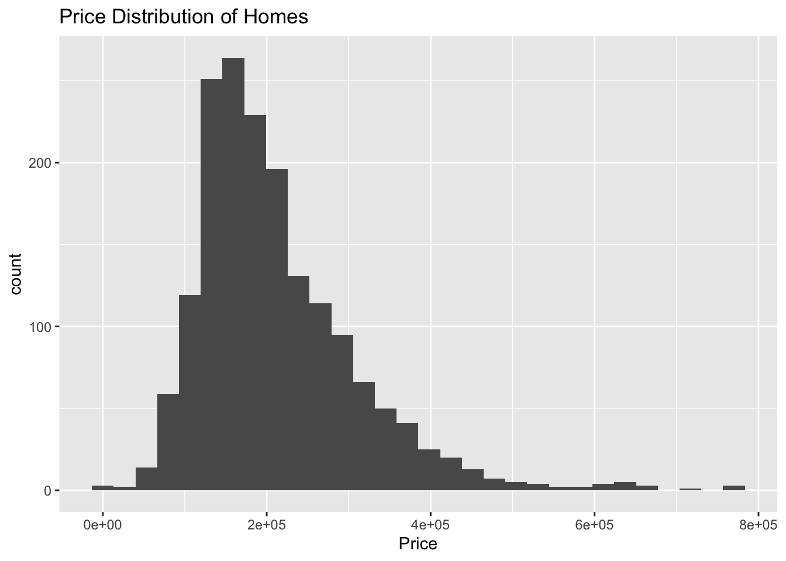
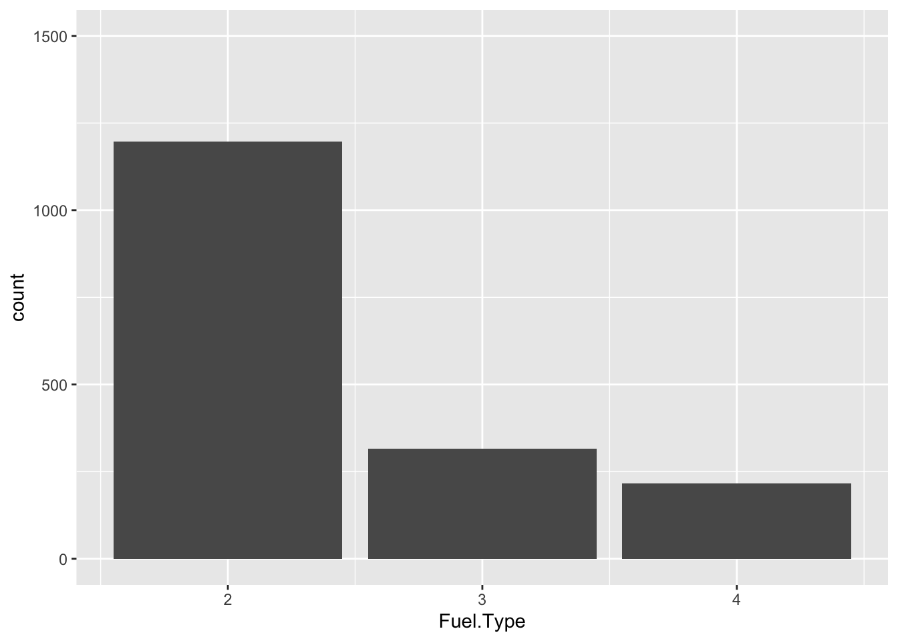
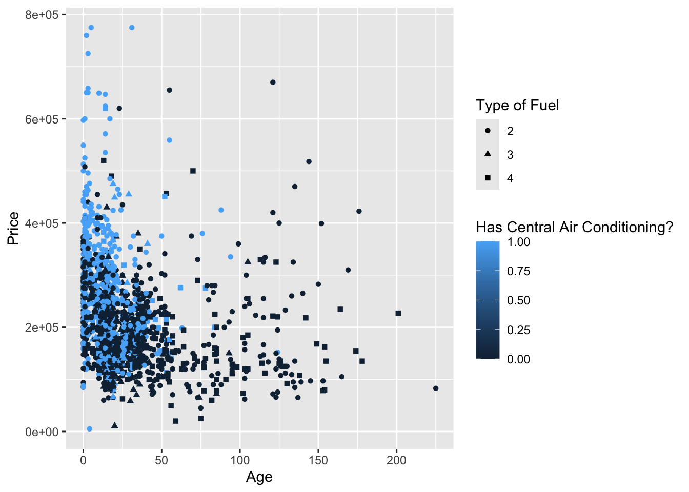
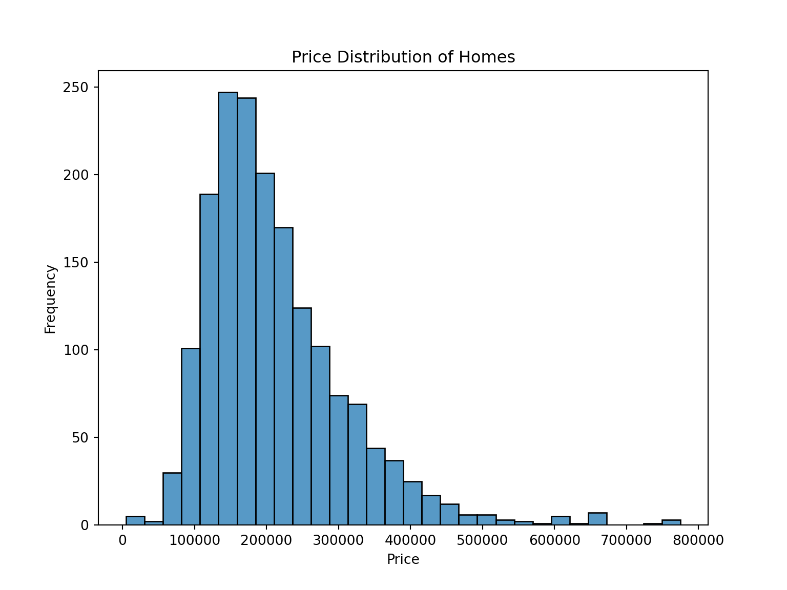
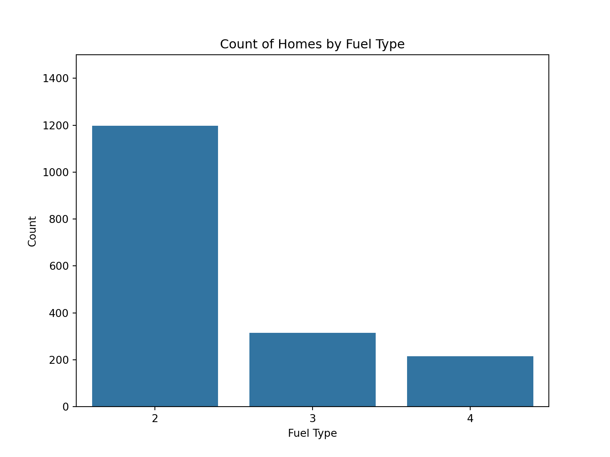
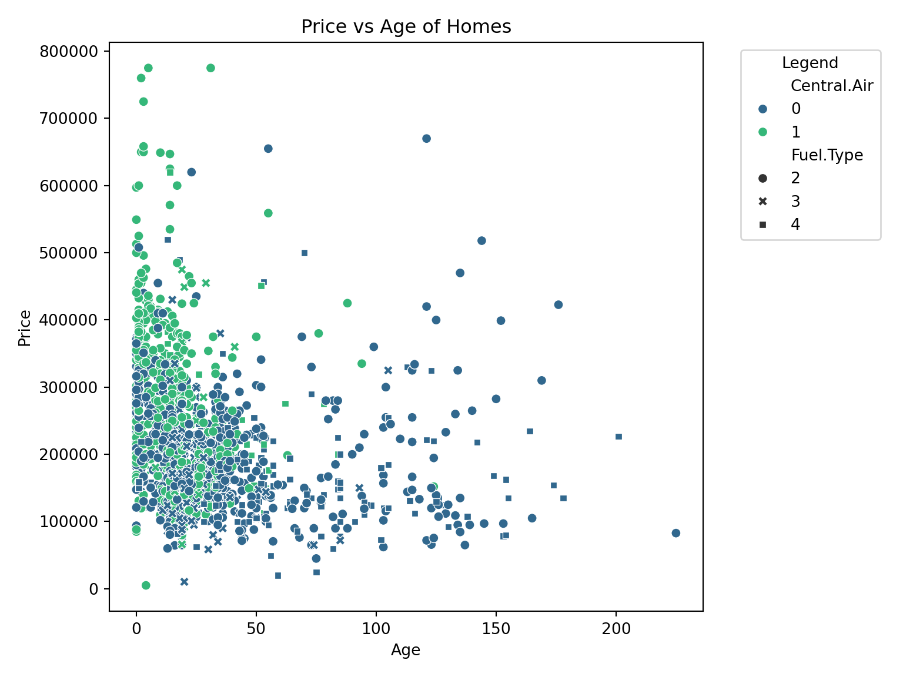

install.packages("reticulate")
reticulate::install_miniconda()
py_install(packages = c("matplotlib", "pandas", "numpy", "seaborn", "statsmodels", "scikit-learn"))Introduction to Python for Data Science
1 Setup
Copy and run the following code in the console:
Load in libraries/packages
#Python stuff
library(reticulate)
#R stuff
library(tidyverse)These are similar to the library command in R.
import numpy as np
# Load in pandas library
import pandas as pd
# Load in matplotlib library
import matplotlib
matplotlib.use("Agg", force=True)
import matplotlib.pyplot as plt2 General Tips
2.1 Console
To run an interactive session of python in the console, run reticulate::repl_python() in the console. To switch back to R, you’ll just type exit into the console.
2.2 Code chunks
If you are running code in both python chunks and R chunks, you can pass objects back and forth using the following syntax:
py$data_from_pythonr.data_from_r2.3 Python Syntax
Python is an object oriented language. Instead of using the %>% pipe, you’ll use a ..
Prof. Heggeseth made this wonderful document comparing Python and R syntax. This is going to be super useful! Google Doc
3 Example
We are going to explore various Python libraries by working through an example Data Analysis from start to finish. In addition to the new Python code, the corresponding R code will be provided too. At the bottom, there will be a bit about each package, and what each does.
To start, download this csv file:
homes <- read_csv("https://mac-stat.github.io/data/homes.csv")import pandas as pd
homes = pd.read_csv("homes.csv")
# pd.read_table("https://mac-stat.github.io/data/homes.csv")We’ll first explore the six main verbs from dplyr (mutate, filter, arrange, select, group_by, summarize). In R, we can use these verbs by running the following code:
#Adding A column that calculates the Price per room (mutate)
homes <- homes%>%
mutate(Price_per_room = Price/Rooms)
#Keeping rows that only have 2 or more bathrooms (filter)
homes %>%
filter(Bathrooms >= 2)# A tibble: 905 × 17
Price Lot.Size Waterfront Age Land.Value New.Construct Central.Air
<dbl> <dbl> <dbl> <dbl> <dbl> <dbl> <dbl>
1 181115 0.92 0 0 22300 0 0
2 120000 0.92 0 1 22300 0 0
3 97000 0.11 0 153 3100 0 0
4 253750 2 0 0 49800 0 1
5 148635 0.32 0 1 6200 1 1
6 150000 0.03 0 24 5100 0 0
7 248800 4 0 28 5500 0 0
8 457000 0.43 1 53 2700 0 0
9 187000 0.46 0 3 15200 0 0
10 229000 0.87 0 9 41100 0 0
# ℹ 895 more rows
# ℹ 10 more variables: Fuel.Type <dbl>, Heat.Type <dbl>, Sewer.Type <dbl>,
# Living.Area <dbl>, Pct.College <dbl>, Bedrooms <dbl>, Fireplaces <dbl>,
# Bathrooms <dbl>, Rooms <dbl>, Price_per_room <dbl>#Ordering the data set based upon the Price of the home, from highest to lowest (arrange)
homes%>%
arrange(desc(Price))# A tibble: 1,728 × 17
Price Lot.Size Waterfront Age Land.Value New.Construct Central.Air
<dbl> <dbl> <dbl> <dbl> <dbl> <dbl> <dbl>
1 775000 0 1 5 412600 0 1
2 775000 0.48 0 31 72600 0 1
3 760000 1.22 0 2 194700 0 1
4 725000 0.21 0 3 70600 0 1
5 670000 0.11 0 121 87000 0 0
6 658300 0.69 0 3 101500 0 1
7 655000 0.19 0 55 103000 0 0
8 650000 0.43 0 2 87800 0 1
9 650000 0.34 0 3 82400 0 1
10 649000 1.04 0 10 192900 0 1
# ℹ 1,718 more rows
# ℹ 10 more variables: Fuel.Type <dbl>, Heat.Type <dbl>, Sewer.Type <dbl>,
# Living.Area <dbl>, Pct.College <dbl>, Bedrooms <dbl>, Fireplaces <dbl>,
# Bathrooms <dbl>, Rooms <dbl>, Price_per_room <dbl>#Selecting only Price, Rooms, and Bathrooms (select)
homes%>%
select(Price, Rooms, Bathrooms, Price_per_room)# A tibble: 1,728 × 4
Price Rooms Bathrooms Price_per_room
<dbl> <dbl> <dbl> <dbl>
1 132500 5 1 26500
2 181115 6 2.5 30186.
3 109000 8 1 13625
4 155000 5 1.5 31000
5 86060 3 1 28687.
6 120000 8 1 15000
7 153000 8 1.5 19125
8 170000 9 1.5 18889.
9 90000 8 1.5 11250
10 122900 6 1.5 20483.
# ℹ 1,718 more rows#Finding the average home price of homes with and without central air (group_by, summarize)
homes%>%
group_by(Central.Air)%>%
summarize(avg_home_price = mean(Price))# A tibble: 2 × 2
Central.Air avg_home_price
<dbl> <dbl>
1 0 187022.
2 1 254904.We’ll accomplish the same 5 goals as above, now using Pandas in Python.
#Adding A column that calculates the Price per room (mutate)
homes["Price_per_room"] = np.divide(homes["Price"], homes["Rooms"])
#Keeping rows that only have 2 or more bathrooms (filter)
homes[homes["Bathrooms"] >= 2] Price Lot.Size Waterfront ... Bathrooms Rooms Price_per_room
1 181115 0.92 0 ... 2.5 6 30185.833333
11 120000 0.92 0 ... 2.0 6 20000.000000
13 97000 0.11 0 ... 2.0 5 19400.000000
17 253750 2.00 0 ... 2.5 12 21145.833333
22 148635 0.32 0 ... 2.5 7 21233.571429
... ... ... ... ... ... ... ...
1720 436023 0.41 0 ... 2.5 12 36335.250000
1721 319900 0.58 0 ... 2.5 8 39987.500000
1722 249000 0.43 0 ... 2.0 7 35571.428571
1723 289000 0.38 0 ... 2.5 11 26272.727273
1724 285000 0.94 0 ... 2.5 11 25909.090909
[905 rows x 17 columns]#Ordering the data set based upon the Price of the home, from highest to lowest (arrange)
homes.sort_values(["Price"], ascending = False) Price Lot.Size Waterfront ... Bathrooms Rooms Price_per_room
1201 775000 0.48 0 ... 3.5 12 64583.333333
701 775000 0.00 1 ... 2.5 9 86111.111111
570 760000 1.22 0 ... 3.5 12 63333.333333
1206 725000 0.21 0 ... 3.0 10 72500.000000
1278 670000 0.11 0 ... 2.0 8 83750.000000
... ... ... ... ... ... ... ...
108 25000 0.21 0 ... 1.0 6 4166.666667
458 20000 0.52 0 ... 1.0 4 5000.000000
890 10300 0.16 0 ... 1.5 6 1716.666667
850 10300 0.16 0 ... 1.5 4 2575.000000
1010 5000 0.29 0 ... 2.5 6 833.333333
[1728 rows x 17 columns]#Selecting only Price, Rooms, and Bathrooms (select)
homes[["Price", "Rooms", "Bathrooms", "Price_per_room"]] Price Rooms Bathrooms Price_per_room
0 132500 5 1.0 26500.000000
1 181115 6 2.5 30185.833333
2 109000 8 1.0 13625.000000
3 155000 5 1.5 31000.000000
4 86060 3 1.0 28686.666667
... ... ... ... ...
1723 289000 11 2.5 26272.727273
1724 285000 11 2.5 25909.090909
1725 194900 3 1.0 64966.666667
1726 125000 7 1.0 17857.142857
1727 111300 6 1.0 18550.000000
[1728 rows x 4 columns]#Finding the average home price of homes with and without central air (group_by, summarize)
homes["Price"].groupby(homes["Central.Air"]).mean()Central.Air
0 187021.562672
1 254903.777953
Name: Price, dtype: float64Some things to note:
- A lot of brackets! This is a list in Python
- A lot of Quotation marks! This is how you can refer to a variable/column. Using
name_df["Column name"] - The
group_bysyntax is a bit different. We first list the variable we’ll be doing an aggregation over (the mean, in this case), and then we group by. This is the opposite ofgroup_byin R.
Again, do utilize this guide!
If you need to translate Python code to R (because you are more familiar with R, etc.), or if you need to write some Python code, just use ChatGPT! Copy and paste the R code above, and add the following prompt: “translate this R code to Python”. You’ll get virtually the exact same code as the python code above.
You can also ask ChatGPT to explain Python code! This will be really helpful if you are given Python code that is already built, and you need to add onto it/understand it.
Before we make some plots, lets imagine that you are working with a python script that outputs some data, but that you want to do the wrangling/cleaning/analysis in R. Here is how you can save a pandas DataFrame object to csv (or any other file type):
#This will save in the same folder as this qmd file.
homes.to_csv("file-path")Now, lets make some plots
#Histogram
homes%>%
ggplot(aes(x = Price))+
geom_histogram()+
labs(title = "Price Distribution of Homes", x = "Price")
#Barplot
homes%>%
ggplot(aes(x = Fuel.Type))+
geom_bar()+
scale_y_continuous(limits = c(0, 1500))
#Scatterplot
homes%>%
ggplot(aes(x = Age, y = Price, color = Central.Air, shape = as.factor(Fuel.Type)))+
geom_point()+
labs(color = "Has Central Air Conditioning?", shape = "Type of Fuel")
Python Equivalent:
import matplotlib.pyplot as plt
import seaborn as sns
# Histogram: Price Distribution of Homes
plt.figure(figsize=(8, 6))
sns.histplot(homes['Price'], bins=30, kde=False)
plt.title("Price Distribution of Homes")
plt.xlabel("Price")
plt.ylabel("Frequency")
plt.show()
# Barplot: Count of Fuel Type
plt.figure(figsize=(8, 6))
sns.countplot(x='Fuel.Type', data=homes)
plt.ylim(0, 1500) # Equivalent to scale_y_continuous(limits = c(0, 1500))(0.0, 1500.0)plt.title("Count of Homes by Fuel Type")
plt.xlabel("Fuel Type")
plt.ylabel("Count")
plt.show()
# Scatterplot: Age vs. Price
plt.figure(figsize=(8, 6))
sns.scatterplot(data=homes, x='Age', y='Price', hue='Central.Air', style='Fuel.Type', palette='viridis')
plt.title("Price vs Age of Homes")
plt.xlabel("Age")
plt.ylabel("Price")
plt.legend(title="Legend", bbox_to_anchor=(1.05, 1), loc='upper left') # Adjust legend
plt.tight_layout()
plt.show()
homes["Price"]0 132500
1 181115
2 109000
3 155000
4 86060
...
1723 289000
1724 285000
1725 194900
1726 125000
1727 111300
Name: Price, Length: 1728, dtype: int64Straight from chatGPT!
Now lets do some modeling. We’ll start with a simple linear regression model
homes_model <- lm(Price ~ as.factor(Central.Air) + Bathrooms, data = homes)Python equivalent (There are many ways to do this)
import statsmodels.api as sm
# Preparing the data
X = homes[['Central.Air', 'Bathrooms']] # Predictor variables
X = pd.get_dummies(X, drop_first=True) # Convert categorical variable Central.Air to dummy variables
X = sm.add_constant(X) # Add a constant term (intercept)
y = homes['Price'] # Response variable
# Fitting the linear regression model
homes_model = sm.OLS(y, X).fit()
# Displaying the summary of the model
print(homes_model.summary()) OLS Regression Results
==============================================================================
Dep. Variable: Price R-squared: 0.375
Model: OLS Adj. R-squared: 0.374
Method: Least Squares F-statistic: 516.4
Date: Wed, 20 Nov 2024 Prob (F-statistic): 1.71e-176
Time: 13:25:32 Log-Likelihood: -21913.
No. Observations: 1728 AIC: 4.383e+04
Df Residuals: 1725 BIC: 4.385e+04
Df Model: 2
Covariance Type: nonrobust
===============================================================================
coef std err t P>|t| [0.025 0.975]
-------------------------------------------------------------------------------
const 4.564e+04 5745.779 7.943 0.000 3.44e+04 5.69e+04
Central.Air 2.905e+04 4144.849 7.009 0.000 2.09e+04 3.72e+04
Bathrooms 8.192e+04 3036.192 26.980 0.000 7.6e+04 8.79e+04
==============================================================================
Omnibus: 598.470 Durbin-Watson: 1.606
Prob(Omnibus): 0.000 Jarque-Bera (JB): 3062.441
Skew: 1.550 Prob(JB): 0.00
Kurtosis: 8.738 Cond. No. 7.79
==============================================================================
Notes:
[1] Standard Errors assume that the covariance matrix of the errors is correctly specified.4 Python vs R Discussion
- At this point, the languages are very close in terms of their capabilities. Almost anything you want to do in Python you can do in R, and vice versa.
- In industry, it seems like Python is more widely used.
- Python is more well integrated into other parts of the data science pipeline
- Because it is a more general programming language, software engineers are also able to work well in it, which contributed to the culture of Python over R
- Far better support for Python than R
Key programmatic differences
- The %>% pipe in R is one of, I think, the best parts about programming in R. You can a large amount of tasks in quick succession in a clean and easy to read format. These functions can be from any library, which is a key distinction here.
- In Python, you can chain together methods (functions) using
., but this won’t work if you are trying ot incorporate multiple libraries. - Square brackets! Very similar to Base R in this regard.
- Python is a general purpose language! It is not built with data analysis/statistical analysis in mind, as R was.
- R does lots of things under the hood that in Python you may have to specify.
tidymodelsandlm()are good examples of this. But, explicit customization is very prevalent and useful inggplot2, which is one of the reasons that it is generally seen as much better for data visualization thanseabornandmatplotlib
5 Python Libraries
Here we’ll go through a bit about each of these libraries in Python. These are generally seen as the most well known/widely used in Python. I’ll give an analogous package(s) in R.
5.1 Data Analysis
NumPy
- One of the main key features of NumPy is the NumPy Array. It is a way to store data that allows for computation to occur much faster (30x faster) than using a standard Python array. This fact means that NumPy is used under the hood by many other Python libraries like Sci-Kit learn and PyTorch.
- There is also many mathematical and statistical functions available.
- Can be thought of as a library that does well in supporting other libraries more specialized applications.
- There isn’t really one package that imitates NumPy in R. If anything, Base R and its capabilities are most similar.
Pandas
- The main library in Python for data analysis.
- Pandas’s
DataTableis the datatype most commonly used. - Brianna’s google doc! details many Pandas functions and their R equivalent
- The analogous R package here is most of the
tidyverse. Sodplyr,readr,stringr,purrr, etc. - Base R also has similar functionality (especially with the use of [] square brackets in both!)
5.2 Data Viz
Matplotlib
- The basic and most popular data viz library in Python
- Here is a good resource
- Another great article that talks about the differences between
ggplot2andmatplotlib: here - Look at the amount of code required to make the first plot in the article using
matplotlib!
import pandas as pd
import numpy as np
import matplotlib.pyplot as plt
from palmerpenguins import load_penguins
penguins = load_penguins().dropna()
species_unique = sorted(penguins["species"].unique())
markers = ["o", "s", "^"]
colors = ["red", "green", "blue"]
for species, marker, color in zip(species_unique, markers, colors):
species_data = penguins[penguins["species"] == species]
plt.scatter(
species_data["bill_length_mm"], species_data["bill_depth_mm"],
s = 50, alpha = 0.7, label = species, marker = marker, color = color
)
X = species_data["bill_length_mm"]
Y = species_data["bill_depth_mm"]
m, b = np.polyfit(X, Y, 1)
plt.plot(X, m*X + b, color = color)
plt.xlabel("Bill length (mm)")
plt.ylabel("Bill width (mm)")
plt.title("Bill length vs. bill width")
plt.legend(title = "Species")
plt.show()Seaborn
- Seaborn builds upon matplotlib. The same visualization in
matplotlibcan take much less code in Seaborn:
import seaborn as sns
penguins = sns.load_dataset("penguins")
sns.set_theme(style = "whitegrid")
(sns.lmplot(
data = penguins,
x = "bill_length_mm", y = "bill_depth_mm",
hue = "species", markers = ["o", "s", "^"], fit_reg = True,
scatter_kws = {"s": 50}, legend = False
)
.set_axis_labels("Bill length (mm)", "Bill width (mm)")
.add_legend(title = "Species")
.fig.suptitle("Bill length vs. bill width", y = 1)
)- Seaborn seems like the better option over matplotlib. However,
matplotlibis integrated into other libraries in Python so it is important to have an understanding of it.
Plotly
- Plotly exists in both R and Python!
- The purpose of Plotly remains the same in both languages: to create interactive visualizations.
- In Python, you’ll use Plotly on its own to create interactive viz. In R, you can also do this using the
Plotlypackage. - However, more commonly in R you’ll use the
ggplotly()function, and in one line of code, your ggplot object will become a plotly object.
5.3 Machine Learning
This is where most people would say Python excels, and has a more robust set of libraries and support for machine learning than R.
Sci-Kit Learn
- This is your go-to library for machine learning in Python
- Regression, classification, supervised and unsupervised
Stats Models
- More focused on statistical models
- Linear, logistic regression
- Time series
5.4 Deep Learning
Another area in which the common consensus is that Python is the go to language for deep learning.
Pytorch
- Built for Python so easier to code/debug in
- Neural Networks
- Natural Language processing (NLP)
- Speech Recognition
- Computer Vision
TensorFlow
- Similar capabilities to PyTorch
- Here is an article comparing the two.